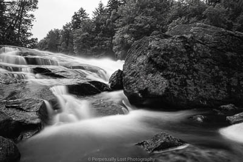

Scroll For More Info
About Me
Photography and travel have been passions of mine for as long as I can remember. After being involved in several photography clubs in high school I took a hiatus for over a decade before buying a used Nikon DSLR five years ago and quickly fell back into photography. In addition to being a photography nerd, I'm also a comic book nerd, video game nerd, Magic the Gathering nerd, as well as basically being employed as full-time nerd. See a theme there? I begrudgingly reside in New England where I complain about the weather for approximately nine months out of the year and I'm the only one who is positively delighted when it's 95 degrees and 100% humidity. A lot of my travel is in the Northeast area but I occasionally escape to other areas in the US or sometimes even manage to swing an international trip. Landscape and astrophotography are usually my areas of focus but I do enjoy photographing wildlife and occasionaly partake in street photography. I created this page not only to display my photographs but also to double as a travel blog. Most of my trips tend to be more outdoors/adventure focused and I try to do a lot of research ahead of time for potenital good photo locations. Recent trips and projects can be viewed below and there is a link at the top of the page for available prints in lots of different formats!
2019 Trips
- January - Acadia NP
- March - Colorado
- March - New Orleans
- April - The Grand Circle
- July - Adirondacks
- August - Lubec, Maine
- August - Acadia NP
- October - Stowe, VT
2020 Trips...so far
- January - Costa Rica
- March - Colorado
- June - Acadia NP
- July - Adirondacks
- August - Great Smokey NP
National Parks & Monuments

New England & Upstate New York

Costa Rica

Projects
Don't Go Chasing Waterfalls
I'm constantly seeking out waterfalls both locally and when traveling.